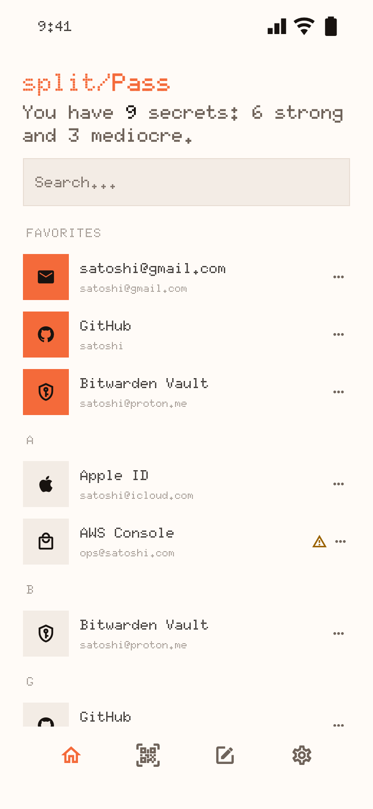
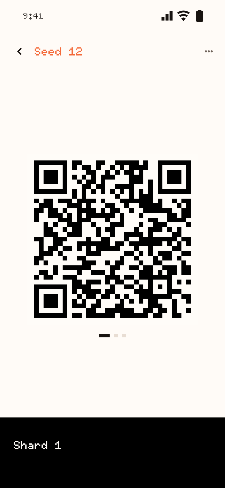
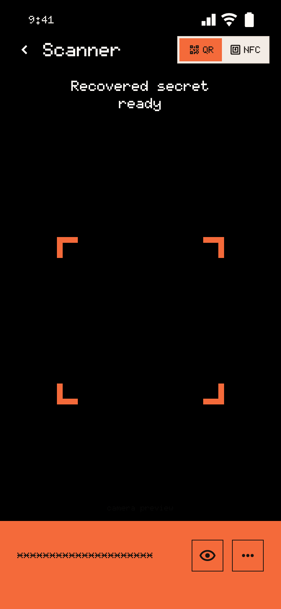
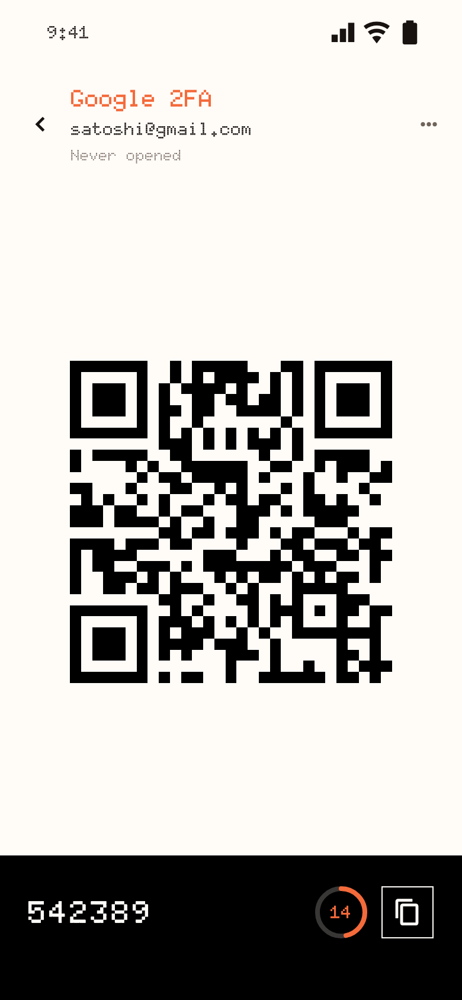
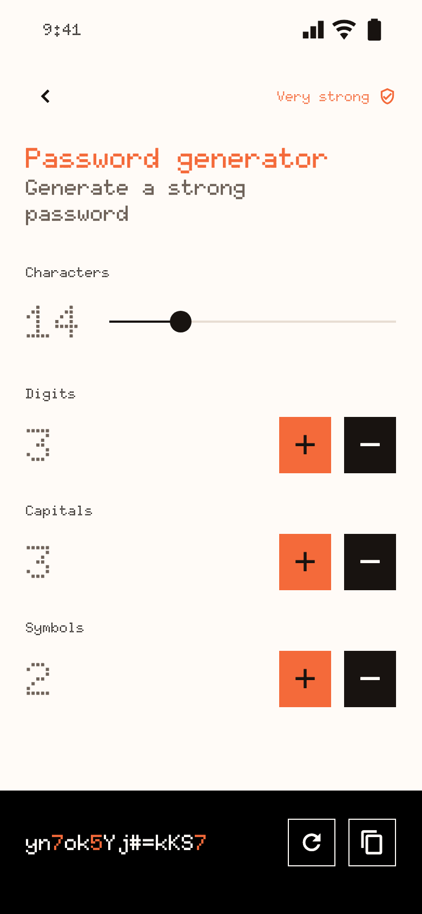
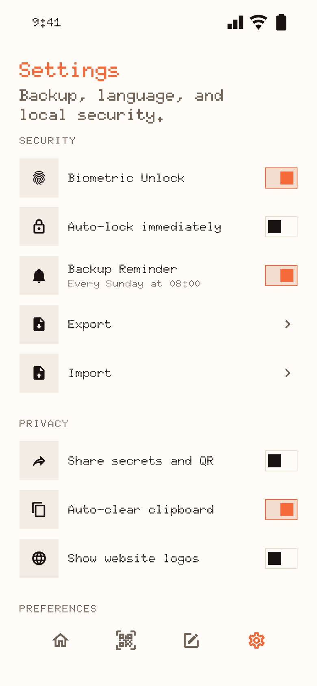

Two of three bring it back.
Split a password, card or seed phrase into three shards. Any two recombine the secret; one alone gives away nothing usable. Lose a shard and you still have it.
A vault for the secrets that matter.
Keep passwords, payment cards, 2FA seeds and recovery phrases in a vault encrypted on your phone, or split any of them into shards you store apart. Any two bring the secret back. One alone gives away nothing usable.
iPhone & iPad · Android soon
Free. No subscription, no ads, no account.



01 / Too valuable for one place
A seed phrase, a payment card, the key to your email: some secrets shouldn’t sit in one storage location. split/Pass keeps them out of one.
Split a password, card or seed phrase into three shards. Any two recombine the secret; one alone gives away nothing usable. Lose a shard and you still have it.
Keep a shard as a QR code or write it to an NFC card. To recover, open the Scanner and read any two with your phone’s camera or NFC.
Passwords, cards, 12 or 24-word seed phrases and 2FA seeds sit behind your master passphrase. Seed phrases are recognised for you and 2FA codes tick on screen.



No account, no server, no telemetry. The vault is sealed with Argon2id and AES-256-GCM. There is no recovery for a lost passphrase, because there is nobody who could do it for you.
02 / From one secret to three shards
A master passphrase encrypts the vault and, unless you choose another for the file, every backup you export. Everything else, from splitting to scanning, happens on the device.
At least 8 characters and not weak. It lives in memory only while the vault is unlocked, and three wrong attempts wipe the app’s data and return to setup.
Type or generate a password, add a card, paste a seed phrase or keep a 2FA seed. Passwords come from a built-in generator with length and character controls.
Create the secret with splitting on. Three shard QR codes appear, and nothing is stored until you save a shard to the device, write it to an NFC card or share it.
One at home, one in your wallet, one with someone you trust. Anyone holding a single shard gets nothing usable, so the pieces never need to be hidden perfectly.
Open the Scanner and read two different shards by QR or NFC. The secret returns on screen, and copied values clear themselves from the clipboard after a while.
03 / Start with the phone you carry
Install the app and keep your secrets apart from the first minute. Add the browser extension later if you fill passwords at a desk.
The vault, the splitter and the scanner. Free, light and dark, in five languages.
Apache-2.0, with the specification next to the code: payload formats, the encryption envelope, the security invariants and every screen.
git clone https://github.com/satoshi-ltd/splitPass.gitView the repository
04 / At your desk
The split/Pass Scanner extension reads a split/Pass QR with your computer’s camera, decodes it locally and fills the password on the page. Each entry is saved for its own domain.
Chrome and Brave (load unpacked) · Safari via Xcode · version {{EXTENSION_VERSION}}
Questions, answered
One of three pieces made from a secret with Shamir secret sharing. Any two pieces rebuild the secret; a single piece carries no usable part of it, so it can sit on a card or in a drawer without giving anything away.
Nothing. split/Pass is free, with no subscription, no in-app purchases and no ads, and it needs no account. There is no paid tier behind it.
You still hold the secret: any two of the remaining shards recover it. Lose two and it is gone, so scan the two you have and split it again before you lose another.
There is no recovery. Nothing leaves your device, so nobody holds a copy of the key. Three wrong attempts also wipe the app’s data. Keep an encrypted backup and the passphrase somewhere safe.
In an encrypted vault on your device. There is no backend and no telemetry. The app reaches the network only for website logos, which are off until you turn them on (the site’s domain name is then requested from DuckDuckGo and Google), and for the Terms and Privacy links.
No. QR codes work on any phone with a camera. An NFC card is an optional place to keep a shard, and reading it depends on your phone’s NFC support.
Export writes an encrypted archive with a neutral file name and no marker that says what it is. Importing replaces the vault’s contents. A weekly reminder asks for a backup, and you can turn it off.
Android blocks screenshots in the app and iOS blurs the app switcher. Copied values clear from the clipboard after a timer, on a best-effort basis. The vault locks after five minutes in the background, or at once if you turn on lock immediately.
No. It reads password, password-with-passcode and 2FA codes. Shards, cards and seed phrases stay in the app, and the extension does not sync with it.
Yes. Every QR code, NFC card, shard format and backup an earlier release wrote is kept readable. Older vaults upgrade to the current encryption the first time you unlock them.